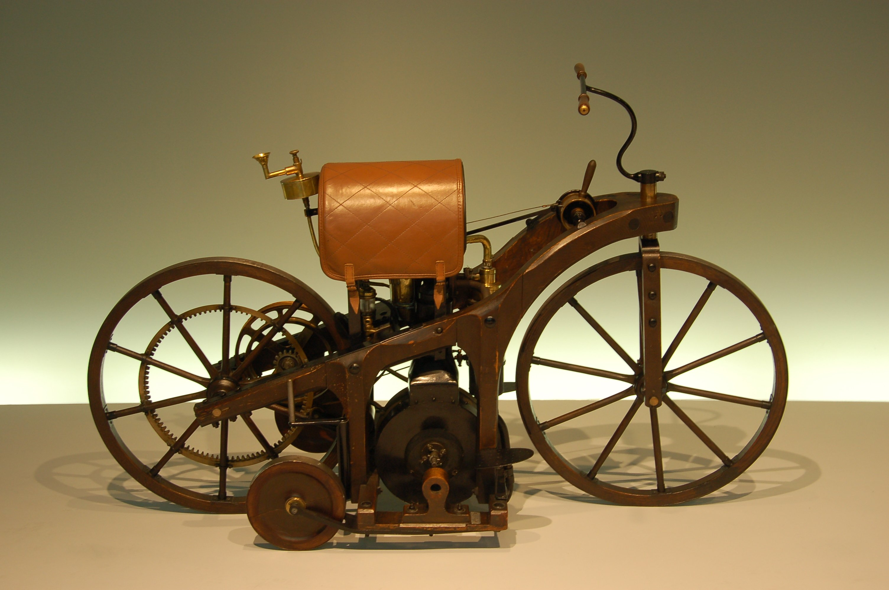

მიმოხილვა
მოტოციკლი სწრაფი და მოქნილი ტრანსპორტის საშუალებაა.ისინი იყოფა სპორტულ,ტურისტულ და სხვა ტიპებად. ამ საიტზე იხილავთ სხვადასხვა ბრენდსა და მოდელს,მათ მოკლე აღწერასა და ძირითად მახასიათებლებზე ინფორმაციას.
რატომ აირჩიო მოტოციკლი და არა სხვა ტრანსპორტი??
- ეკონომიურობა-მცირე საწვავის ხარჯი
- დამატებითი შეგრძნებები:სისწრაფე და თავისუფლება
სად დაიწყო ყველაფერი?
მოტოციკლეტის ისტორია იწყება ბენზინის ჩანაცვლებით და ინოვაციებით, აქ განიხილება როგორც ტექნიკა,ასევე კულტურა და უსაფრთხოება.
მსოფლიოში ყველაზე პირველი მოტოციკლი

მსოფლიოს პირველი მოტოციკლი შეიქმნა 1885 წელს გერმანელი ინჟინრების, გოტლიბ დაიმლერისა და ვილჰელმ მაიბახის მიერ. მათ ააგეს ერთცილინდრიანი ბენზინის ძრავით აღჭურვილი სატრანსპორტო საშუალება, რომელსაც „Reitwagen“ ეწოდებოდა — რაც გერმანულად ნიშნავს „საფეხმავლო მანქანას“. ამ გამოგონებამ ჩაუყარა საფუძველი თანამედროვე მოტოციკლეტების ეპოქას და გახსნა გზა ბენზინზე მომუშავე ინდივიდუალური ტრანსპორტის განვითარებისთვის.